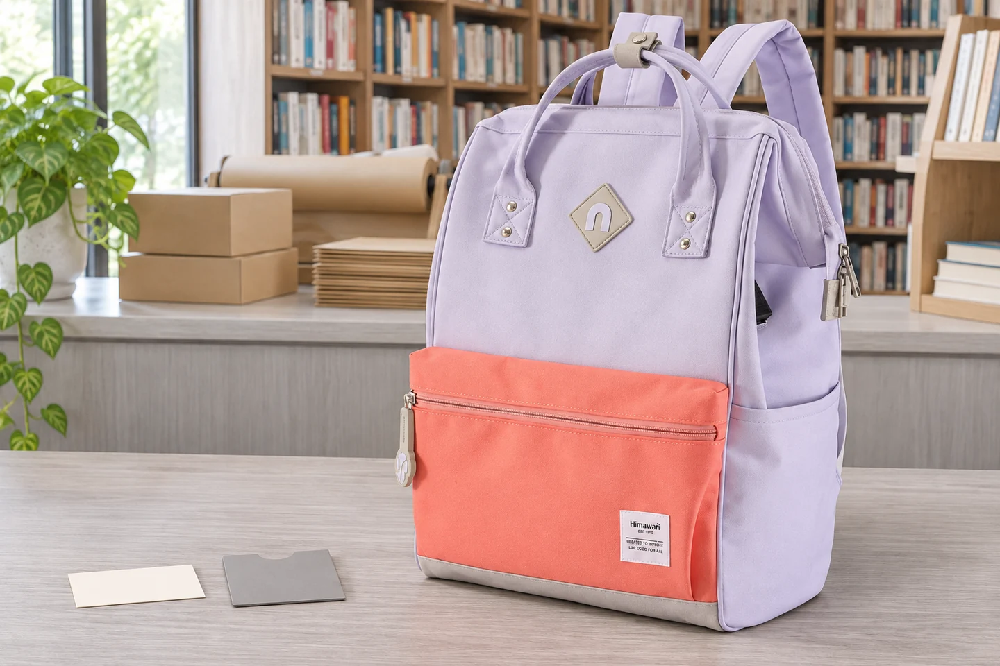
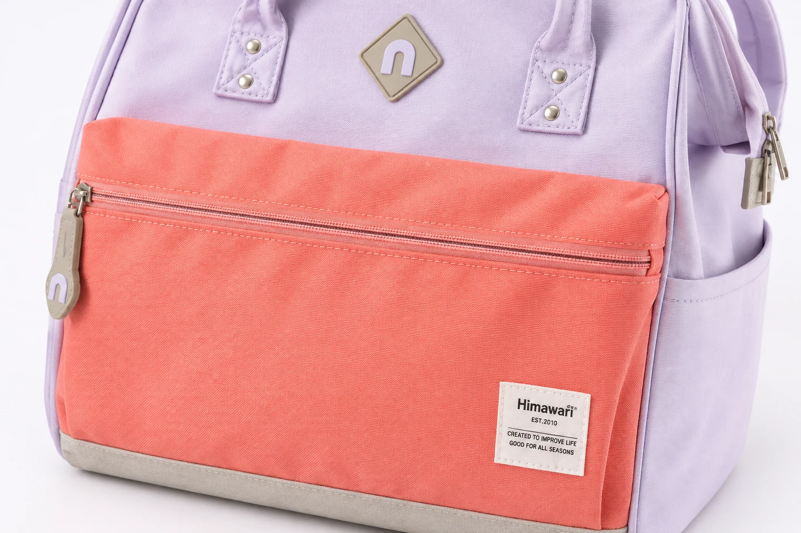
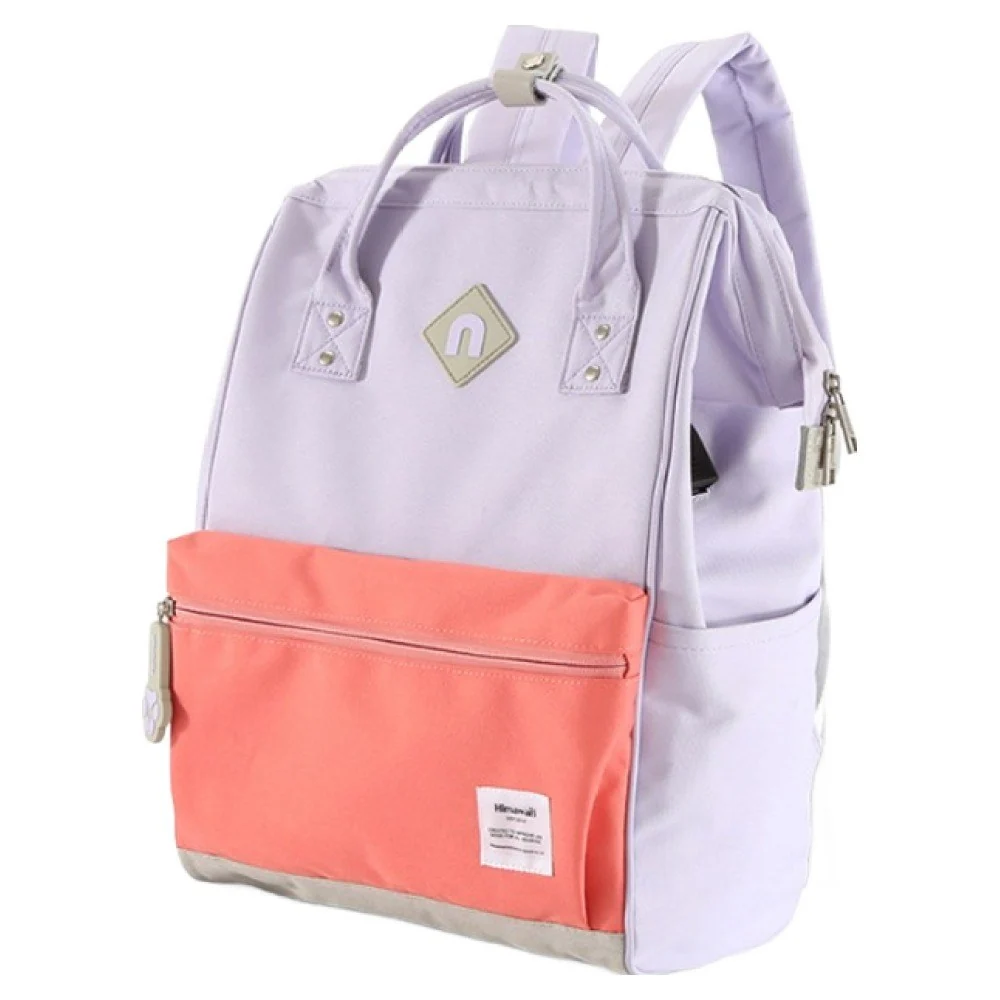

백팩 앞포켓 지퍼에 영수증이 끼었다면

매장에서 받은 영수증을 백팩 앞포켓에 급히 넣고 지퍼를 당겼는데 손잡이가 중간에서 멈춥니다. 가느다란 종이 끝이 포켓 안에서 말려 올라와 지퍼 가까이에 남아 있었을 수 있습니다. No.9004 연보라의 실제 사진에는 코랄색 앞포켓 위로 가느다란 가로 지퍼가 놓여 있습니다. 이 제품에서 영수증이 끼었다는 사례가 확인된 것은 아닙니다. 사진에 보이는 입구를 기준으로, 얇은 종이를 넣고 빼는 상황에서 자주 헷갈리는 점을 문답으로 짚습니다.
손잡이가 뻑뻑하면 종이부터 잡아당겨도 될까요?
먼저 손잡이를 당기던 손의 힘을 풉니다. 가방을 안정적으로 놓고 지퍼 손잡이 바로 옆에 종이 끝이나 비닐 모서리가 보이는지 살핍니다. 종이가 보이더라도 가방 바깥으로 나온 부분을 세게 당기면 종이가 찢어져 일부가 안에 남을 수 있습니다. 종이가 끼어 있는 부분과 지퍼가 움직여야 할 길부터 보는 편이 낫습니다. 잡기 편한 면을 위해 가방을 돌려놓을 수 있고 한 손으로 포켓 천을 받쳐 접힌 면을 펴볼 수도 있습니다.
종이가 입구에서 움직일 공간이 있다면, 손잡이를 마지막으로 당긴 방향과 반대로 아주 조금 움직여봅니다. 풀리는 느낌 없이 계속 걸리면 멈춥니다. 잘 보이지 않는 안쪽에 뾰족한 도구를 집어넣으면 원단이나 지퍼 손질이 더 까다로워질 수 있어요. 종이가 어디에 끼었는지 보이지 않는다면 조명이 밝은 곳에서 다시 확인하고 지퍼 자체가 휘거나 천이 끼어 손을 대기 어렵다면 제품 문의에 상태를 설명합니다. 완전히 빠지지 않은 종이가 안으로 더 들어갔는지 여부도 열리는 상태에서만 확인하세요.

영수증을 가운데에 두면 끝부분에 두는 것보다 다를까요?
가로 지퍼가 달린 작은 포켓은 위쪽으로 난 선을 따라 열립니다. 종이가 입구와 평행하게 눕지 않고 세로로 서 있으면 지퍼 길의 일부로 들어올 수 있습니다. 한쪽 구석에 두더라도 종이를 넣고 지퍼를 닫기 전 가장 높은 모서리가 어디에 오는지 보세요. 손끝에서 잡히는 게 종이 한쪽뿐이면 접힌 면이 반대편으로 벌어져 있을 수 있습니다. 안쪽으로 밀어 넣고 손을 빼면서 지퍼 쪽에 다시 따라 올라오지 않는지도 확인합니다.
긴 영수증을 접으면 길이는 짧아지지만 접힌 자리의 두께는 늘어납니다. 작은 종이를 여러 장 겹쳐 넣는 날에는 일부가 말려 올라오기 쉽습니다. 지금 필요한 한 장만 앞에 둔 뒤 다른 종이는 안쪽에 따로 모을 수 있습니다. 종이를 작게 접을 수 없는 경우나 나중에 펼칠 일이 많은 경우에는 평평한 봉투를 쓰는 방법도 있습니다. 봉투의 가로가 포켓과 비슷하더라도 입구의 지퍼 끝이나 모서리에서 여유가 다를 수 있습니다. 직접 넣어 본 뒤 닫는 손이 종이 모서리를 계속 밀어야 한다면 큰 칸을 쓰는 편이 수월합니다.
넣고 바로 메야 하는 날에도 확인할 수 있을까요?
물건을 받으면서 한 손에 가방을 들고 있으면 앞포켓 지퍼가 위를 향하지 않을 수 있습니다. 가방이 기울어진 방향으로 영수증이 내려가다 중간에 걸리면, 손끝에서는 넣은 것처럼 느껴져도 종이 끝이 남아 있을 수 있어요. 계산대에서 오래 가방을 열어 두기 어렵다면 우선 한 손으로 종이를 접어 잡고 사람 흐름에서 비킨 뒤 앞포켓을 여는 방법도 있습니다. 한 손으로 포켓 입구에 종이를 슬쩍 끼워 놓고 지퍼를 닫느라 되돌아오는 것보다 동작이 한 번으로 줄어들 수 있습니다.
닫기 전에 손가락으로 지퍼 가까운 종이 모서리를 가볍게 아래로 보냅니다. 닫을 때는 반대 손으로 포켓 원단을 조금 받쳐 손잡이가 지나갈 길이 보이게 합니다. 지퍼를 급히 끝까지 긋기보다 종이가 있었던 자리를 지나갈 때 저항이 달라지는지 느껴보세요. 아무 데도 걸리지 않았고 종이가 밖에 남지 않았다면 포켓의 끝 부분만 보고 메면 됩니다. 반대로 처음부터 같은 지점에서 걸린다면 종이 외에 포켓 안감이나 함께 넣은 물건이 지퍼로 나오는 중인지도 살펴야 합니다.

영수증 대신 얇은 봉투를 써도 될까요?
봉투를 써도 모서리가 지퍼 바로 밑에 닿으면 걸리는 자리만 달라집니다. 빈 봉투를 넣은 상태에서 지퍼 끝을 확인한 뒤 평소 모으는 정도의 종이를 담아 다시 닫아 보세요. 종이가 쌓이면 앞포켓이 불룩해져 겉에서 손잡이를 보는 각도도 달라집니다. 포켓을 받치던 손이 봉투까지 누르게 되면 그날은 큰 칸으로 옮깁니다. 같은 포켓에 이어폰이나 접이식 손거울도 두는 날에는 그 물건이 종이를 입구 쪽으로 밀어 올리는지 살핍니다.
영수증을 넣을 포켓을 사기 전에 사진에서 무엇을 볼까요?
No.9004 연보라는 포켓 윗부분의 가로 지퍼, 왼쪽의 손잡이, 길게 이어진 입구가 실제 사진에 보입니다. 안쪽에서 종이를 눕힐 수 있는 깊이는 외부 사진으로 잴 수 없습니다. 가방 전체의 외부 크기는 28 × 40 × 17cm지만 앞포켓 안쪽까지 같은 비율로 줄어드는 것도 아닙니다. 평소 증빙을 크게 접지 않고 보관한다면 지퍼의 실제 열리는 폭과 포켓 입구에서 바닥까지의 길이를 문의하거나 실물에서 확인하세요. 작은 영수증만 넣더라도 손잡이를 잡은 손 아래에서 종이가 말려 올라오는지는 한 번 보는 편이 좋습니다.
빨리 꺼내고 싶은 물건과 잘 구겨지는 물건이 항상 같은 칸에 들어갈 필요는 없습니다. 앞포켓을 자주 쓰더라도 걸린 종이를 빼느라 매번 지퍼를 되돌린다면, 그 종이만 두는 자리를 하나 바꿔 봅니다. 종이가 놓이는 방향, 서 있는 높이, 지퍼를 닫을 때 손이 느끼는 변화를 기억해 두면 어떤 재질의 포켓을 쓰더라도 막히는 곳을 찾기 쉽습니다.